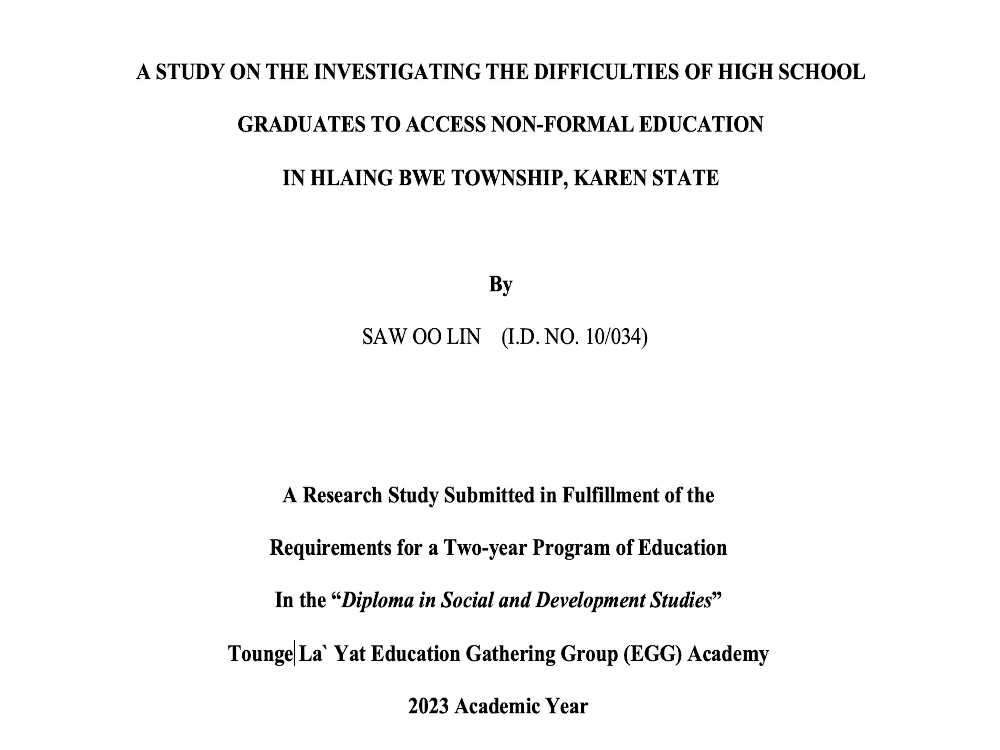
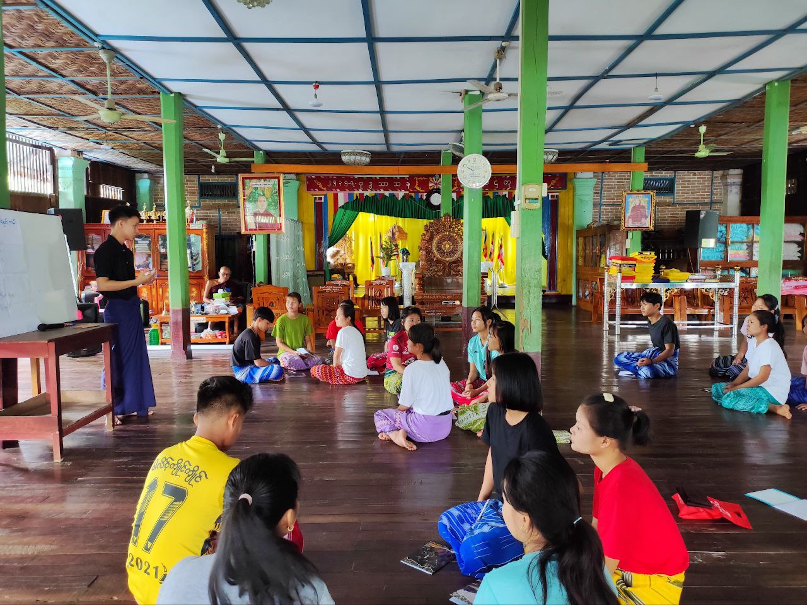
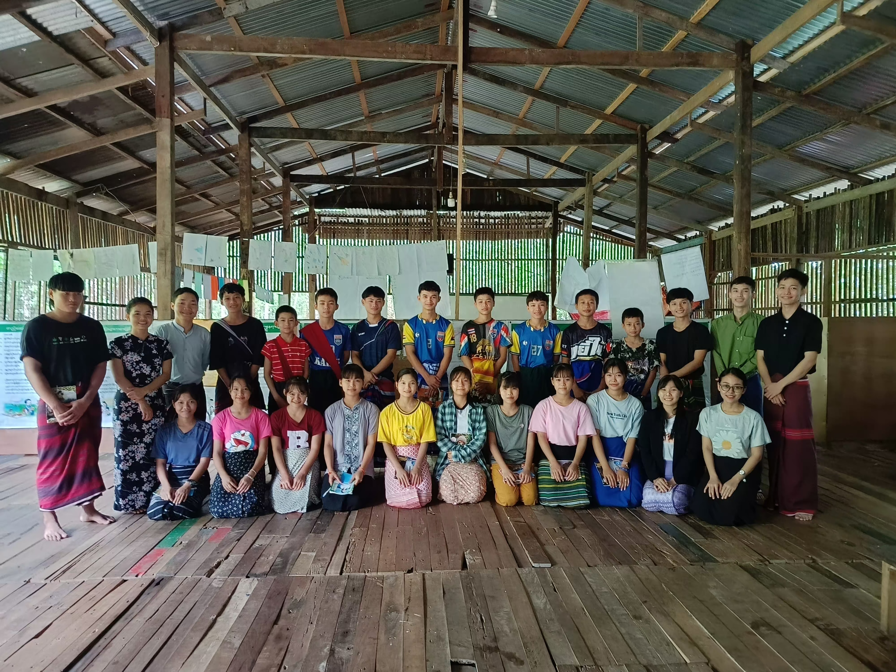
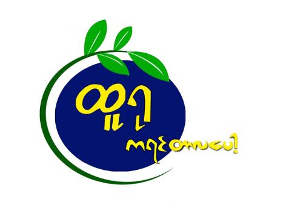

This research study was to investigate the difficulties of high school graduates to access
non-formal education in Hlaing-Bwe Township, Karen State. Researchers asked (150) targeted
participants including High School Graduates (90), Parents/Guardians (30), Education
Provider (20), and Community Leader (10) to acquire information regarding research findings.
This study focused on two objectives which were (1) To investigate non-formal educational
opportunities of high school graduates in the target area. (2) To find the challenges of high
school graduates in accessing non-formal education programs in Hlaing-Bwe Township, Karen
State.
September 10, 2023
(Win Kyan Village Tract)

This project conducted Youth Personal Development Training; namely Public Speaking, Communication and Active Learning techniques
in Karen Pha Lin Village, Win Kyan Village Tract, Hpa-An township, Karen State to targeted beneficiaries. It is a rural community
comprising approximately 100 households. This project targeted the youths who dropped out of school between the age of fifteen to
twenty-five years old. And this project aimed to provide the participants with the needed skills and knowledge in their respective
lives by anticipating being active youths in their community.
September 18, 2023
(Kankalay Village)

In 2022-2023 academic year, while studying at EGG Academy, we had to do a project for the Organization Development subject which
we are doing a youth personal development project for community. Six members are involved in this project. The purpose of this
project is to identify and support the needs and interests of the youth in the community. Our youth personal development project
integrates public speaking, active learning, motivation, multiple intelligences, and communication to provide a comprehensive and
transformative experience for young individuals. Our management approach ensures a dynamic, engaging, and personalized learning journey
for participants.
August 1, 2023
Program Assistant

I worked as a Program Assistant at the Initiative Enterprise Center (IEC), an community based organization founded by EGG Academy graduates
in 2023 to support local community development through entrepreneurship. IEC empowers small and medium-sized enterprises by
providing accessible services in business planning, innovation, and social media marketing. In my role, I assist with
administrative and financial tasks, coordinate program activities, and support the implementation of various initiatives
that drive sustainable economic growth in rural areas.
August 1, 2023
Administration (Part-Time)

I also worked part-time in Administration at TURU which is a social business that focused on promoting traditional Karen food culture.
TURU’s Karen Tarlapot, is a version of traditional dish “Tarlapot,” made convenient as a ready-to-eat meal.
In my role, I support the logistics and help maintain accurate records of production, inventory, and sales.
This experience has allowed me to contribute to a mission-driven business while gaining hands-on experience and administrative operations.
Previously, I reponsibled as the IT Maintenance Team Leader at EGG Academy,
where I was responsible for leading the IT team and ensuring the proper maintenance of all IT equipment.
My duties included checking material and inventory lists, regular system updates, cleaning up data and storage, and physically
cleaning. This role strengthened my technical troubleshooting skills and my ability to manage routine IT operations in an educational
setting.
(2022 - 2023)
Community-based Summer Program
 June 3, 2023
June 3, 2023
Religion Exchange
Minzee Mosque